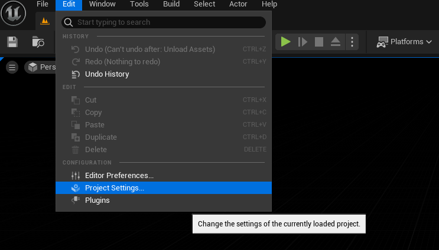
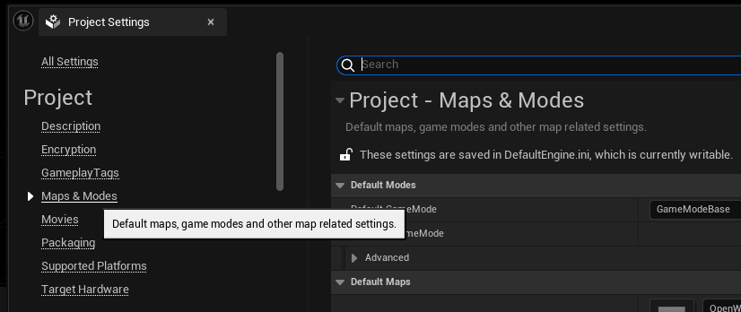
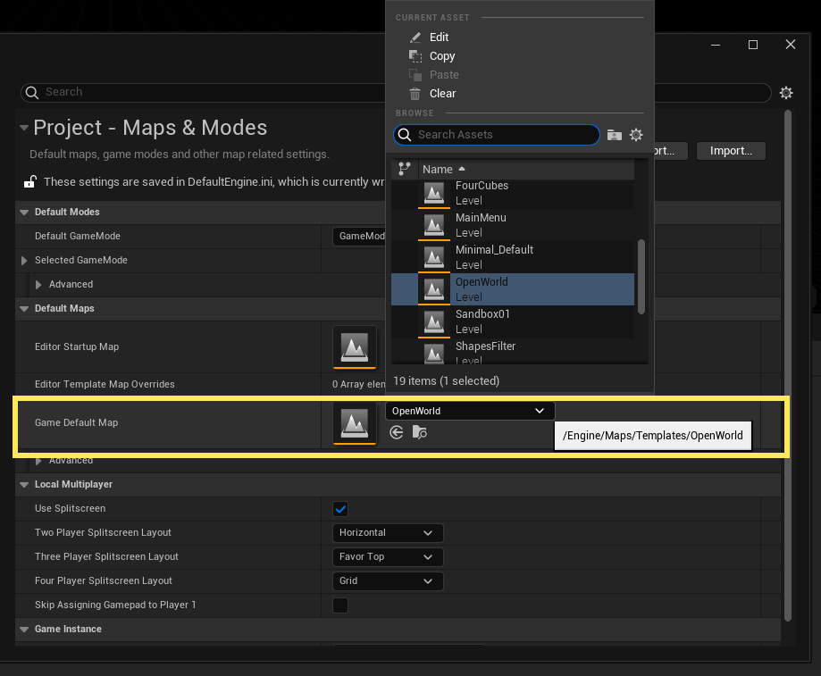
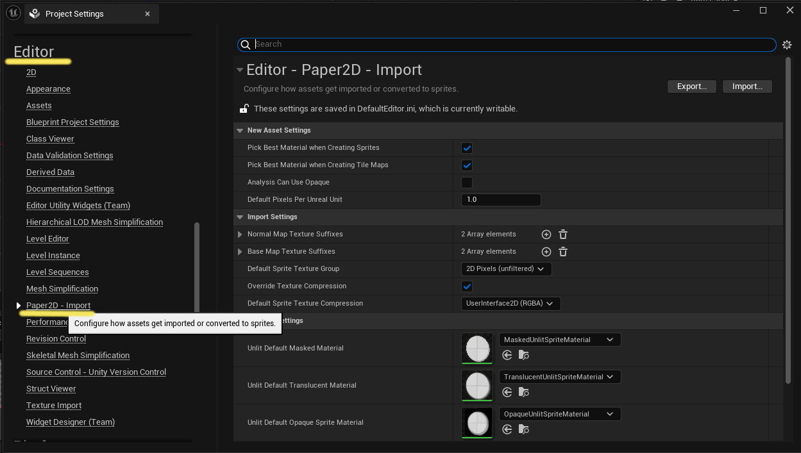
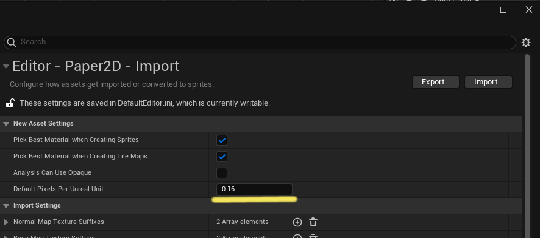

[Edit] > [Project Settihns...]

左側パネルの[Project]の[Maps & Modes]クリック

[Project Setting]のサブスクリプションを開く >
[Game Default Map]フィールドの右側にあるドロップダウン矢印をクリック > 希望するレベルを選択

[Edit] > [Project Settihns...]
左側パネルの[Editor] > [Paper2D - Import]

[New Asset Settings]>[Default Pixels PEr Unreal Unit]
にある値を 1.0 から 0.16 へ変更することで画像がすべて16pxの大きさになる
